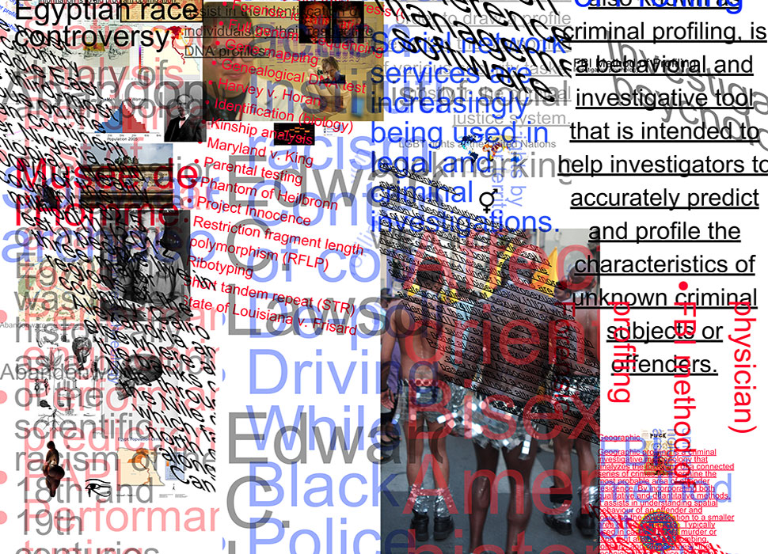

---

layout: page
title: Profiling and Wikipedia
author: "Kelly Walters &amp; Christina Webb"
description: Exploring profiling online
category: project


---

In our ongoing investigation for Project 1, Christina and and I explored the topic profiling as it relates to online user experiences. In our research we found that there were multiple definitions for profiling, that not only represented the social and political applications that we are familiar with, but technological aspects as well. Using Wikipedia as a source, we found 8 definitions that led back to both our cognitive interests and our process of using HTML code. This inspired a systematic approach to gathering content, collecting imagery, applying HTML attributes and forming the final composition.

